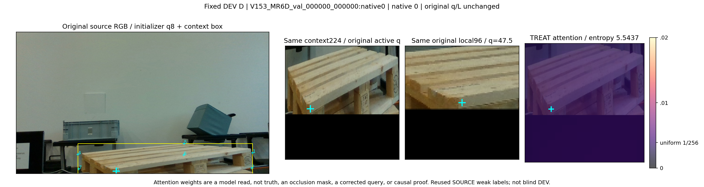
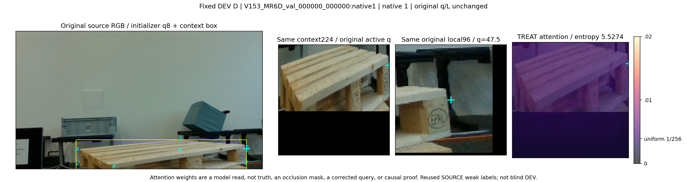
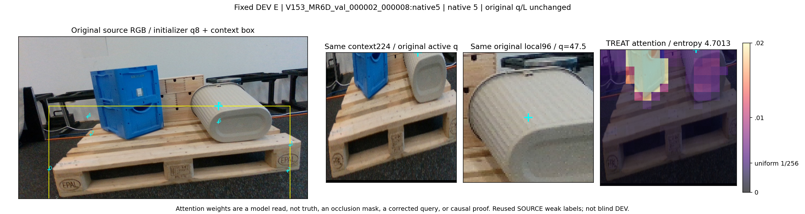
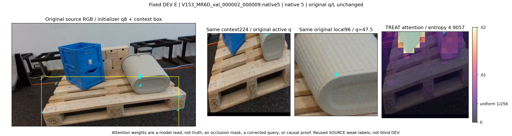

고정 DEV 첫 D2/E2: attention은 정답·가림 mask·교정 query가 아닙니다
원 q/L/native 유지. SOURCE weak label, 재사용 DEV. 색축 0..0.02, 균일값 1/256. 추가 학습 없음.

V153_MR6D_val_000000_000000:native0; entropy=5.543743
V153_MR6D_val_000000_000000:native1; entropy=5.527419
V153_MR6D_val_000002_000008:native5; entropy=4.701321
V153_MR6D_val_000002_000009:native5; entropy=4.905671